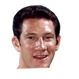

“Red Auerbach always said it’s not how fast you are, it’s how quick you are. He certainly is quick with the balland he’s also low to the ground and gets to places where other people can’t because of their size. I think he’s been an absolute delight to watch.”

John Havlicek on Red AuerbachBoston Globe